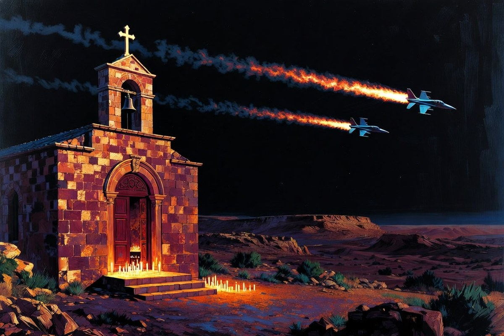

Geopolitica · 27 ottobre 2026
La Giordania bombarda il sud della Siria dopo la strage nella chiesa

La mattina Amman dice che i tre arrestati per l'attacco alla chiesa di Karak non appartengono a nessun gruppo. La sera i caccia giordani colpiscono in Siria i gruppi a cui, secondo l'esercito, quei tre sarebbero legati.
di Franco Zanghì
Venerdì 23 ottobre, durante un funerale nella chiesa greco-ortodossa di San Giorgio, nel villaggio di Hamoud, nel governatorato di Karak, a circa 90 chilometri a sud di Amman, tre uomini armati hanno aperto il fuoco sulla gente raccolta nel cortile. Il ministero della Salute giordano ha contato 9 morti e 34 feriti. È l'attacco più grave mai subito dai cristiani di Giordania, che sono fra il 2 e il 3% della popolazione in uno dei paesi arabi che li hanno protetti meglio. Nessuno lo ha rivendicato.
Lunedì all'alba la polizia giordana ha catturato i tre, dopo circa tre ore di sparatoria in una casa abbandonata a pochi chilometri dalla chiesa. Sono due fratelli e un loro cognato, tutti giordani, tutti feriti; per loro vale la presunzione d'innocenza fino alla sentenza definitiva. Il capo della Sicurezza pubblica li ha definiti estremisti, ma ha precisato che non sono legati a nessun gruppo organizzato e che l'attacco non era stato preparato prima: avrebbero deciso mentre seguivano il corteo funebre.
L'operazione, poche ore dopo
La sera stessa l'esercito ha annunciato l'operazione «Deterrenza giordana, Hamoud». I caccia hanno colpito nelle campagne di Daraa e di Suwayda, nel sud della Siria, contro quelli che Amman chiama covi di organizzazioni terroristiche collegate agli autori della strage. Il governo giordano ha parlato di oltre 20 miliziani dello Stato islamico uccisi e si è detto dispiaciuto per le vittime civili. Le autorità siriane ne hanno contate 7, fra cui cinque membri della stessa famiglia, tre dei quali bambini.
Damasco ha condannato i raid come una violazione della sovranità siriana, ha negato di essere stata avvisata e ha chiuso il valico di Nassib, l'unico passaggio per persone e merci fra i due paesi. L'esercito giordano sostiene invece di avere agito in coordinamento con il governo siriano. Il ministro degli Esteri giordano Ayman Safadi ha detto che le incursioni si basavano su informazioni raccolte sul campo e miravano a neutralizzare minacce accertate e operazioni terroristiche imminenti, esprimendo in una telefonata con l'omologo siriano Asaad al-Shaibani profondo rammarico per le vittime civili.
Due versioni che non stanno insieme
Il 23 ottobre, prima degli arresti, l'emittente Alhurra aveva sentito due esperti. Murad Batal al-Shishani, fondatore del gruppo Rimarcs e studioso della violenza politica, vede nell'attacco a una cerimonia religiosa i tratti tipici dello Stato islamico. Waleed al-Oweimer, specialista di antiterrorismo, è andato oltre: per lui non è stato un gesto spontaneo, c'è stata una preparazione, e in Giordania esistono ancora cellule capaci di agire. Due letture opposte a quella del capo della sicurezza giordano; e la stessa agenzia Reuters ha notato che le dichiarazioni di Amman sull'assenza di un piano sembrano in contrasto con la giustificazione dei raid.
Le domande che restano sono semplici. Se i tre agivano da soli, chi è stato colpito in Siria? E se erano legati a quei gruppi, perché la mattina si diceva il contrario? La Giordania ha il diritto di difendersi, e lo Stato islamico nel sud della Siria non è un'invenzione; ma un raid che uccide tre bambini va giustificato con le prove, non con una dichiarazione che smentisce quella del mattino.
Come è proseguita
Il 28 ottobre i due governi hanno annunciato un'indagine congiunta sugli attacchi e la nascita di un comitato di sicurezza per il coordinamento sul campo e sull'intelligence contro le minacce terroristiche, un organismo già concordato l'anno scorso contro il contrabbando e il ritorno dello Stato islamico. Il valico di Nassib, secondo l'agenzia siriana Sana, ha riaperto la mattina di mercoledì, con il traffico passeggeri e commerciale tornato regolare. Resta da vedere se quel comitato comincerà davvero a lavorare.
Fonti
- Al Arabiya, «Jordan launches airstrikes in Syria in retaliation for deadly church attack», 26 ottobre 2026
- Associated Press, arresto dei tre sospettati, 26 ottobre 2026
- Reuters, «Jordan says it killed more than 20 Islamic State militants in airstrikes on Syria», 27 ottobre 2026
- Al Jazeera, «Why Jordan has struck Syria: What we know», 27 ottobre 2026
- Al Jazeera, «Syria-Jordan border reopens amid probe into deadly air strikes», 28 ottobre 2026
- Sicurezza Internazionale, «Giordania e Siria formeranno comitato di sicurezza dopo raid contro obiettivi Isis», ottobre 2026
- France 24, condanna del ministero degli Esteri siriano, 27 ottobre 2026
- Sana, chiusura e riapertura del valico di Nassib, 27 e 28 ottobre 2026
- Alhurra, «Terrorist Attack on Karak Church Seen as a Message to Jordanian Leaders», 23 ottobre 2026
Il numero dei civili uccisi in Siria varia fra le fonti, da cinque a otto: nel testo è il dato delle autorità siriane. I 20 miliziani uccisi sono una dichiarazione del governo giordano, non verificata in modo indipendente.